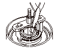

クラッチの分解
専用工具
クラッチ スプリング コンプレッサ セット 07LAE-PX40000
クラッチ スプリング コンプレッサ アタッチメント 07HAE-PL50100
クラッチ スプリング コンプレッサ アタッチメント 07LAE-PX40100
ボルト セット10 07GAE-PG40200
スナップ リング プライヤ 07LGC-0010100
スナップ リングを取外す。
1速クラッチは、クラッチ ドラム（A）からクラッチ エンド プレ－ト（B）、クラッチ ディスク（C）（6枚）、クラッチ ウェ－ブ プレ－ト（D）（6枚）を取外し、ウェ－ブ スプリング（E）をクラッチ ピストンから取外す。
2速クラッチは、クラッチ ドラム（A）からクラッチ エンド プレ－ト（B）、クラッチ ディスク（C）（4枚）、クラッチ フラット プレ－ト（D）（4枚）を取外し、ウェ－ブ スプリング（E）をクラッチ ピストンから取外す。
4速クラッチは、クラッチ ドラム（A）からクラッチ エンド プレ－ト（B）、クラッチ ディスク（C）（4枚）、クラッチ フラット プレ－ト（D）（4枚）を取外し、ウェ－ブ スプリング（E）をクラッチ ピストンから取外す。
3速クラッチは、クラッチ ドラム（A）からクラッチ エンド プレ－ト（B）、クラッチ ディスク（C）（4枚）、クラッチ ウェ－ブ プレ－ト（D）（4枚）を取外し、ウェ－ブ スプリング（E）をクラッチ ピストンから取外す。
5速クラッチは、クラッチ ドラム（A）からクラッチ エンド プレ－ト（B）、クラッチ ディスク（C）（4枚）、クラッチ ウェ－ブ プレ－ト（D）（4枚）を取外し、ウェ－ブ スプリング（E）をクラッチ ピストンから取外す。
クラッチに専用工具をセットする。
1速クラッチは、スプリング リテーナ（A）の上に専用工具のアタッチメントをのせてセットする。
2速、3速、4速、5速クラッチは、専用工具のアタッチメント（A）をスプリング リテ－ナ（B）の外側に、リタ－ン スプリングと接触している箇所に確実にセットする。
スプリング リテ－ナとリタ－ン スプリングの接触していない箇所に専用工具のアタッチメントを取付けた場合、スプリング リテ－ナを変形させてしまうので、アタッチメントは必ずリテ－ナとスプリングの接触している箇所に取付ける。
リタ－ン スプリングを圧縮する。徐々に圧縮してリテ－ナが傾いたり、変形しそうな場合は、専用工具のアタッチメントの位置を変える。
スプリング リテーナとクラッチ ハブのセンタがずれないように徐々に圧縮する。
スナップ リングを取外す。

専用工具を取外し、スナップ リング（A）、スプリング リテ－ナ（B）、リタ－ン スプリング（C）を取外す。
クラッチ ドラムをウエスなどでくるんでオイル通路の片側をふさぎ、片側の通路にエアを吹き込んでクラッチ ピストンを取外す。
1速クラッチは、クラッチ ピストン（A）をクラッチ ドラムから取外し、Oリング（B）をピストンとクラッチ ドラムから取外す。
2速、3速、4速、5速クラッチは、クラッチ ピストン（A）をクラッチ ドラムから取外し、ピストン外側のOリング（B）と内側のOリング（C）を取外す。


 スプリング リテーナとクラッチ ハブのセンタがずれないように徐々に圧縮する。
スプリング リテーナとクラッチ ハブのセンタがずれないように徐々に圧縮する。